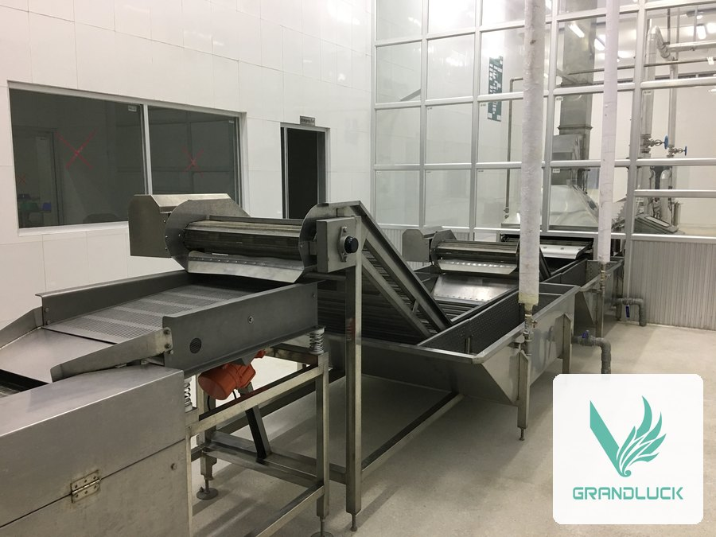
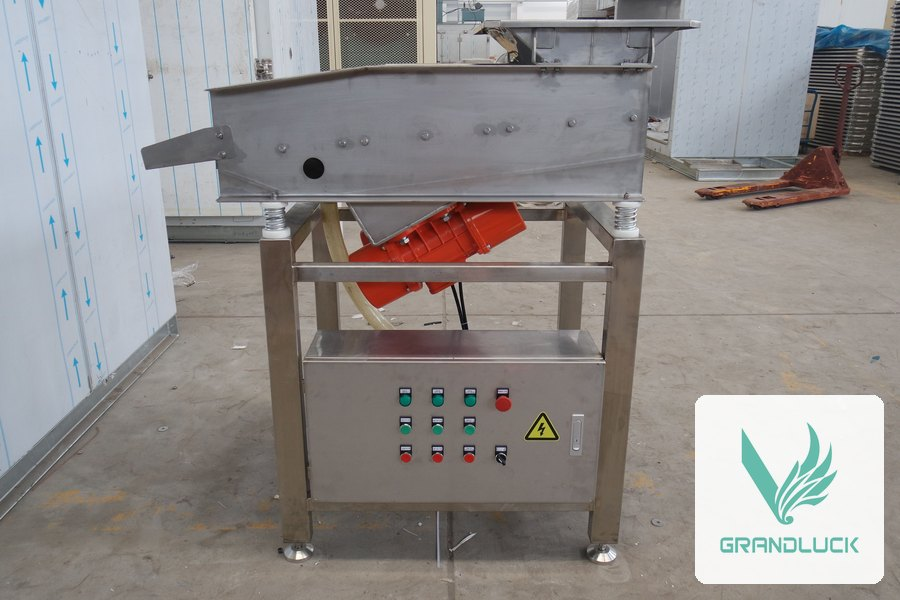
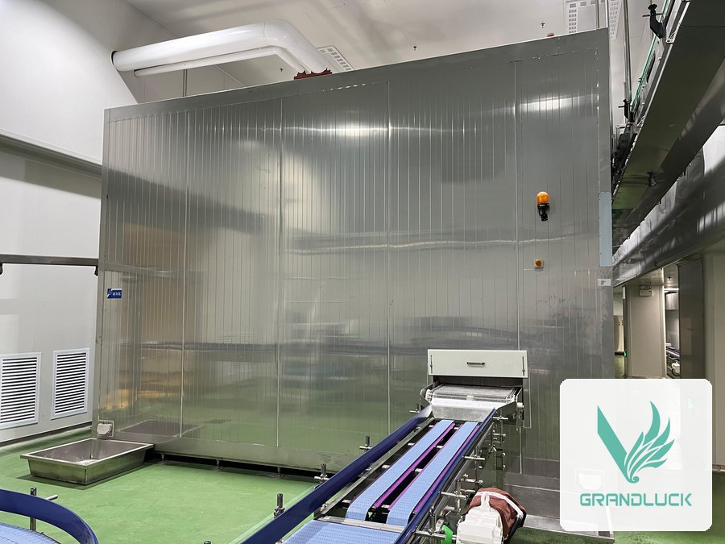
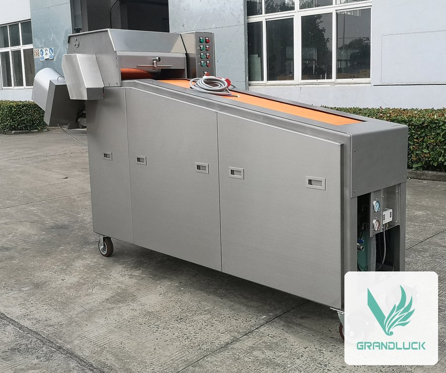

Ecuador es uno de los mayores exportadores de camarón del mundo. Grandluck fabrica la clasificadora de camarón y la línea completa de camarón cocido, de la clasificación al glaseado, y Ecuclima es su representante autorizado en Ecuador: coordina la cotización con la fábrica, instala, supervisa y da servicio técnico local.
Ecuclima trabaja con la industria de camarón y mariscos (ver clientes en Quiénes somos).
Clasificadora de camarón: el primer paso de la línea
Clasificadora de camarón Grandluck

Sistema de alta eficiencia que clasifica el camarón por tamaño de forma precisa. Está diseñada específicamente para trabajar con camarón con cabeza o sin cabeza, y es el primer paso de la línea de camarón cocido de Grandluck.
- Cinta elevadora de dos etapas que reparte el producto de forma pareja.
- Rodillos y cinta elevadora en plástico grado alimenticio; eje del rodillo en acero inoxidable.
- Velocidad de producción ajustable mediante variador.
- Regulador de calibre incorporado: el operador ajusta el estándar de clasificación en cualquier momento.
Línea de camarón cocido, paso a paso
Línea completa de Grandluck para procesar camarón cocido, de la clasificación al empaque, armada con equipos en serie. Se cotiza y se diseña a medida según el volumen de producción de cada cliente.

- Clasificadora de camarón: separa el camarón por tamaño antes de cocinar (ficha propia, ver «Clasificadora de camarón»)
- Cocedor de vapor tipo túnel: cuece con vapor a alta temperatura el camarón ya clasificado, directo sobre la banda de malla; tiempo de cocción ajustable entre 0,5 y 14 minutos
- Enfriador de agua normal: el camarón sale muy caliente de la cocción; se enfría primero con agua a temperatura normal (con hielo agregado para mantenerla cerca de +2 °C) para sacarle el calor grueso rápido
- Enfriador de agua helada: segundo enfriamiento, ahora con agua helada, hasta bajar la temperatura del camarón por debajo de 10 °C; la banda corre sincronizada con el enfriador anterior
- Vibrador de distribución: seca por vibración el agua que trae el camarón después del enfriado, y lo reparte parejo antes de entrar al congelador espiral — así el espiral rinde al máximo
- Congelador espiral: congela el camarón de forma individual (IQF; ver túneles y espirales IQF) — mismo equipo de la ficha «Congelador espiral simple/doble»
- Elevador o transportador descendente: lleva el camarón ya congelado hacia el encapador de agua
- Encapador de agua en cortina: aplica una capa de hielo (glaseado) al camarón congelado, con el grosor de la capa controlado por la cantidad de agua de la cortina; se recomienda alimentar con agua fría del orden de 2 °C y hielo en escamas (ver máquinas de hielo) para mantener la calidad del glaseado
- Endurecedor (segunda congelación): pequeño túnel IQF que congela por fuera la capa de glaseado recién aplicada, secando y bajando rápido la temperatura superficial del camarón



Pescado: despieladora

Despieladora industrial de tambor giratorio congelado, con mejoras propias sobre el diseño de equipos similares de otros fabricantes. Apta para bacalao, atún, sardina y otras especies, con espesor de despielado ajustable y operación sencilla.
- Partes en acero inoxidable o plástico de ingeniería, conformes a normas internacionales de higiene alimentaria.
- Ejes de transmisión con rodamientos de bolas.
La cotización la prepara Grandluck desde fábrica. Ecuclima la coordina con usted y, si lo prefiere, le vende el equipo en Ecuador; además lo instala, lo supervisa y da servicio técnico local.
¿Prefiere hablar directo con el fabricante? WhatsApp Grandluck · info@grandluck-freezcold.com
Sobre el fabricante
Nantong Grandluck Freezcold Equipment Co., Ltd. (China) se especializa en congelación rápida y soporte de refrigeración para el procesamiento de alimentos. Su equipo de ingenieros mecánicos, de refrigeración, eléctricos y de automatización tiene un promedio de 15 años de experiencia. Según el fabricante, antes de cotizar entienden el proceso de cada alimento y diseñan el equipo a la medida, con instalación en sitio y servicio posventa.
En Ecuador, Ecuclima es su representante autorizado: coordina la cotización con la fábrica, instala, supervisa y da servicio técnico local, y también puede vender el equipo. Conozca a Ecuclima.
Preguntas frecuentes
¿La clasificadora trabaja con camarón con cabeza?
Sí, trabaja con camarón con cabeza y sin cabeza.
¿Cuántos calibres tiene?
Tiene 6 grupos con 12 rodillos y 6 o 7 calibres, y el operador puede ajustar el estándar de clasificación en cualquier momento.
¿Qué incluye la línea de camarón cocido?
Clasificación, cocción al vapor, dos etapas de enfriamiento, vibrador de distribución, congelación IQF en espiral, glaseado y endurecido. Se cotiza y se diseña a medida según el volumen.
¿Qué se recomienda para el glaseado?
Agua fría, del orden de 2 °C, con hielo en escamas, según la ficha de la línea.
¿Qué datos necesitan para cotizar?
El volumen de producción, el tipo de producto (entero, sin cabeza, cocido) y la ciudad de la planta. Escríbanos por WhatsApp: Ecuclima coordina la cotización con Grandluck.